本章导引
我们在小时候就已经观察到如下现象：一条笔直的铁轨，其两边似乎会相交于视线尽头地平线上一点(图5.1).可是，铁轨的两边明明应该是平行的啊！该如何从数学上解释什么是“地平线”？另一个看似不同但却在数学上密切相关的问题是：在阳光投射下，物体影子的变化规律是怎样的(图5.2).
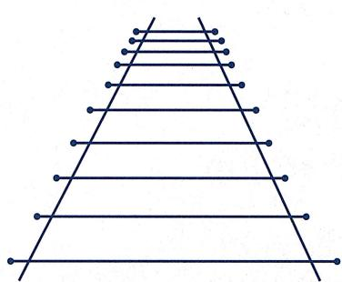
image
图5.1 铁轨两边看似相交于地平线上一点
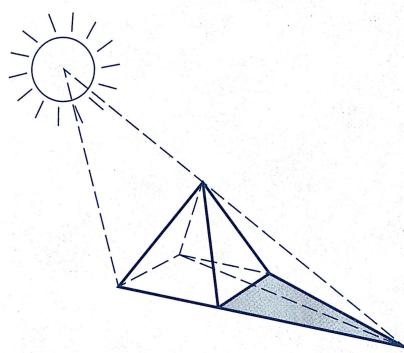
image
图5.2 阳光下的影子
诸如此类光线投射问题最早在绘画艺术和建筑绘图等问题中引起了人们的注意和研究兴趣，并最终导致了射影几何的产生。在这一章里，我们将对平面射影几何作简要介绍。在射影几何中，长度、角度、平行性都不再被保持，故而它们不是射影几何的研究内容。射影几何中重要的几何性质是共线性（粗略来说，欧氏几何是尺规作图的几何，而射影几何则是只用直尺作图的几何）。当然，这并不是说射影几何里面就没有诸如二次曲线之类的几何对象了，只不过跟欧氏几何不同的是：在射影几何中，所有的平面二次曲线都是等价的。换而言之，对于生活在射影平面的居民而言，从不同的视角去观察同一条二次曲线时，有人会看到椭圆，有人会看见双曲线。
§5.1 射影平面
在上一章中我们提到, 克莱因将射影几何作为统一当时其他所有几何的一个框架, 它具有最大的几何变换群 (从而只有最少的不变量). 但是, 平面的仿射变换群已经是一个非常 “大” 的群了, 怎么还能构造更大 (且保持直线) 的群呢? 这里的要点在于: 射影几何是建立在一个 “比欧氏空间更大” (但仍然密切相关) 的空间之上的.
为简单起见, 本书仅考虑二维即平面射影几何的理论, 它是古典射影几何的主要舞台. 下面先介绍射影平面的构造. 粗略来说, 射影平面是由欧氏平面加上一些 “无穷远点” (即地平线上的点) 组成的. 在考虑欧氏变换或者仿射变换时, 这些 “无穷远点” 依然被映为 “无穷远点”, 不会出现在我们的视野中. 于是在研究欧氏几何或者仿射几何时, 总把目光限制在标准欧氏平面里, 意识不到这些 “无穷远点” 的存在. 但是在一般的射影变换下, 这些 “无穷远点” 不再是特殊的点, 而是跟欧氏平面里的点具有相同地位的点. 通过这种方式, 可以将上一章提到的那些几何变换都视作 “特殊的射影变换”, 从而那些几何就都可以被统一到射影几何的框架里.
射影直线
在定义射影平面之前, 需要先定义和理解射影直线. 射影直线有许多等价的定义方式, 从几何上看, 它是 “平面里所有过原点的直线” 这个集合的某种参数化: 射影直线里的每个 “点” 代表平面里一条过原点的直线 (但射影直线并不只是一个集合, 它具有几何结构).
我们知道, 平面里任何一条过原点的直线可表示成
其中 不同时为0，而且
所以自然考虑集合 上的等价关系
因为每一个等价类 恰好代表了 中一条经过原点的直线, 所以商空间
就代表了“平面里所有过原点的直线”这个集合. 称 为射影直线.
接下来给出 的另一个解释, 即它可被视为“普通的直线上添加一个‘无穷远点’”, 这是它被称作“直线”的原因. 为此, 需要在 上引入坐标. 显然, 上的坐标 并非 上好的坐标. 为简单起见, 引入记号
并把 (其中 不全为零) 叫做 里点 的齐次坐标。这种用“比值”表示的方法是恰当的，因为 当且仅当 ，使得 ，即 (该式在广义的意义下，即 时，也被认为是成立的).
为了从几何上理解 ，我们考虑自然的“包含”映射
显然 是单射, 但它并非满射, 因为 里 轴所对应的点 在 中, 却并不在 的像集里.
注意到 是 中唯一不在 的像集中的点, 而且当 或 时 (图5.3), 所对应的直线斜率越来越接近于零, 从而可以认为 越来越接近于 轴即 . 换而言之, 是 的“极限”. 于是, 若记 , 则得到如下“分解”:
(其中 表示无交并). 通过这种方式, 可以把射影直线 理解为“添加了无穷远点的直线”.
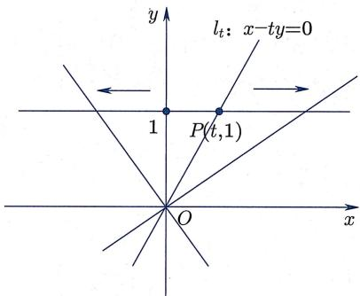
image
图5.3 射影直线中的
即 相对于等价关系
而形成的等价类的集合．形象地看， 的这个模型是通过把“圆的每组对径点粘合”所形成的空间．于是，在描述这个空间时，可以去掉半个圆（因为这半个圆里的点都被另外半个圆里的点代表了），而且将剩下的半个圆的两个端点粘合起来（因为它们是同一个等价类中的点）．从拓扑上看，所得的空间依然是一个圆，但从几何上看，它却有着跟欧氏圆完全不同的性态.
这些模型都表明, 在射影几何中, 无穷远点 一点都不特殊.
射影平面的定义
接下来提高一个维度, 定义射影平面 为
其中等价关系 定义为
显然, 每个等价类代表了 中一条经过原点的直线, 从而射影平面 可以被视作 中所有经过原点的直线所组成的集合.
类似于射影直线, 可以用齐次坐标表示射影平面的点, 即记 中的元素 为
其中 不全为零.
不过, 跟 不同的是, 不再是“向 里添加一个点”, 而是向 里添加一条射影直线
其中 “∞-直线” 可以被理解为 “地平线”. 为了说明这一点, 考虑 “包含” 映射
则它是单射, 并且 “绝大多数直线” (即那些经过原点并穿过平面 的直线) 都在 的像中 (图5.4). 仅有的例外是那些经过原点且平行于 平面的直线, 即那些经过原点并包含在 平面中的直线. 这些直线恰好组成了射影直线 (由齐次坐标 , 给出).
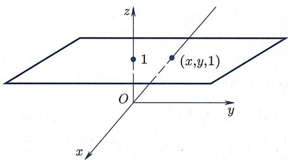
image
图5.4 射影平面中的
作为推论, 我们得到如下的分解:
于是, 射影平面具有两重面目: 首先, 是 中所有穿过原点直线的集合; 其次, 是二维平面 的一个扩充, 即由 添加一条无穷远射影直线所构成.
跟射影直线类似, 射影平面 中所有点都有相同的地位, 没有哪个点是特殊的.
注5.1.1 (1)类似于射影直线的情形, 可以从二维球面 出发构建射影平面 , 即
但是, 与一维情形不同的是, 商空间 (可视为将球面 切成两半之后, 从半球面出发, 把赤道上对径的点 “粘合” 起来所得的空间) (在拓扑上) 不再是二维球面 , 而是一个不能在 中被实现的单侧曲面. 我们将在本书最后一章对它的拓扑做简单介绍.
- 类似地, 可以对所有 定义 维实射影空间 . 它可以被视为 中所有穿过原点直线的集合, 并且有类似的分解和“球面商”模型:
- 此外还可以考虑复空间 中的复直线集合, 所得空间被记为 并被称为 维复射影空间. 同样有
复射影空间是现代几何中最基本最重要的空间之一(参见下文的注5.1.9).
射影平面里的直线
跟欧氏几何一样, 称 中的任何元素为点. 为了行文方便, 把标准模型中满足 的点 称为普通点, 而把形如 的点称为无穷远点, 于是 中的点集都是普通点集合与无穷远点集合的无交并. 当然, 普通点与无穷远点在几何上并无实质性的区别, 这种划分只是为了在特定坐标系中处理起来方便一点.
于是, 正如希尔伯特体系所揭示的那样, “点” 所代表的不必一定是空间里一个确定的位置, 而可以是任意东西 (此处是过原点的直线, 或者球面上的一组对径点). 希尔伯特告诉我们, 重要的不是点是什么, 而是点与点之间的关系是什么.
那么, 射影几何里的直线是什么?
定义 5.1.2(射影平面里的直线) 对于任意不全为零的三元组 ，称 中三元一次齐次多项式的零点集概念定义
定义 5.1.2(射影平面里的直线) 对于任意不全为零的三元组 ，称 中三元一次齐次多项式的零点集
为 中的一条射影直线, 简称为直线.
引理 5.1.3 (直线的良定性)命题/引理
引理 5.1.3 (直线的良定性)
- 上述定义是良定的 (即直线的定义不依赖于代表元的选取).
- 三元组 与 给出 中同一条 (射影) 直线当且仅当它们作为 中向量是平行的.
证明 (1) 如果 ，并且 ，即存在 \la证明
证明 (1) 如果 ，并且 ，即存在 使得
那么 。换句话说, 若等式 对 成立, 则它对任意的 都成立. 故直线的定义是不依赖于代表元的选取, 从而是良定的.
(2) 是显然的.
从上面这个证明可以看出, 为什么定义中需要 “齐次性”: 如果考虑非齐次方程 , 其中 , 则满足方程的 并不是由 中的对象组成的.
在 的所有直线中, 有一条比较特殊 (当然, 它只是在标准模型下看起来特殊, 实际上并不特殊) 的直线, 即由所有 “无穷远点” 构成直线
被称为无穷远直线.
接下来一个自然的问题是考虑 中点与线的“关联”关系. 射影平面内点与线的关联关系非常简单. 一方面, 跟欧氏几何类似, 可以证明
命题5.1.4(两点关联唯一一条直线) 中任意两个不同的点都位于 \mathbb{R}\mathbb{P}^命题
命题5.1.4(两点关联唯一一条直线) 中任意两个不同的点都位于 中唯一一条直线上.
证明 考虑 中相异的两个点 . 证明
证明 考虑 中相异的两个点 . 因为 ,
故对于 中的直线
有 .
另一方面, 如果存在另一条直线
也满足 , 那么
于是 平行于 ，从而直线 □
另一方面，跟欧氏平面几何（以及球面几何、双曲上半平面几何）不同的是，
命题5.1.5(两线关联唯一一个点) 中任意两条不同的直线都相交于 中唯一一个点.命题
命题5.1.5(两线关联唯一一个点) 中任意两条不同的直线都相交于 中唯一一个点.
证明 考虑 中相异的两条直线证明
证明 考虑 中相异的两条直线
因为 , 所以
故 中的点 同时位于 与 上.
另一方面, 如果存在另一个点 也满足 , 那么
于是 平行于 ，从而点
可以从三维欧氏几何的角度来理解这两个命题，它们所表达的无非就是（1）任何两条过原点的直线一定共面；（2）任何两个过原点的平面一定相交于一条过原点的直线。上面这两个命题（及其证明）是互相对偶的。事实上，本章中将会出现很多展现出射影平面中点与直线之间对偶关系的命题。本章末尾将从公理的角度进一步解释该对偶性。
注5.1.6 在仿射几何中已经没有角度的概念, 因为角度不再是仿射变换下的不变量. 在比仿射几何更大的射影几何中, 更没有角度的概念, 也就没有垂直的概念. 另一方面, 在仿射几何中, 依然可以定义平行性 (不相交的直线即平行线), 但在射影几何中, 不存在平行的概念, 因为根本不存在不相交的直线 (这并不矛盾, 因为当把仿射平面嵌入射影平面时, 原本平行的直线在射影平面中将会相交于仿射平面之外的那条无穷远直线上).
齐次化方法
下面介绍一种自然的办法, 将 (注意不是 ) 上的任意一条 (未必经过原点的) 直线扩充成 上的直线. 这种方法叫做坐标齐次化:
设 是 中的一条直线. 令
将其代入 的方程, 可得
即
这是一个齐次方程, 它给出了 上的一条直线
射影平面的直线 l 被称为欧氏平面直线 的射影化.
直线 与其射影化 之间的关系如下：在标准模型中， 对应于 平面 (见图5.4)，即 . 于是
即 与 的交集恰为 . 此外, 与无穷远直线 不全为0\} 的交集为
而该点恰好是把 放在 平面中时, 它所对应的“无穷远点”(即 平面中过原点且与 平行的直线所对应的射影点). 所以,
上的二次曲线
坐标齐次化是联系 上几何与 上几何的一个有效办法. 下面用它来讨论一下 上的二次曲线.
定义5.1.7 上的二次曲线）对于任何一个系数不全为零的三元二次齐次多项式概念定义
定义5.1.7 上的二次曲线）对于任何一个系数不全为零的三元二次齐次多项式
称它在 中的零点集
为 中的一条二次曲线.
类似于射影平面中直线的定义, 这里需要齐次性, 否则所得集合在 中不是良定的. 当然, 也可以把三元二次多项式
用矩阵乘法写成
其中
是一个非零的 对称矩阵.
一个自然的问题是: 中的二次曲线看上去是什么样子的?
例 5.1.8 平面中最典型的二次曲线分别为椭圆、抛物线、双曲线 (图 5.5):经典例题
例 5.1.8 平面中最典型的二次曲线分别为椭圆、抛物线、双曲线 (图 5.5):
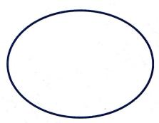
image
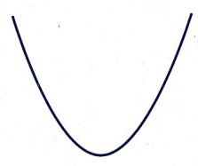
image
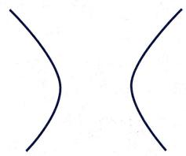
image
图5.5 二次曲线
抛物线和双曲线是无限延展的, 因此在射影平面中它们应该与无穷远直线相交. 为了理解它们在射影平面中的几何形状, 我们将它们的方程齐次化, 即令 , 代入并两边同时乘 , 得到它们的“射影化”的方程, 如下表所示:
<table><tr><td></td><td><eq>\mathbb{R}^2</eq>中的方程</td><td><eq>\mathbb{RP}^2</eq>中的方程</td><td>与<eq>l_\infty</eq>的关系</td></tr><tr><td>椭圆</td><td><eq>\frac{x^2}{a^2}+\frac{y^2}{b^2}=1,a\geqslant b>0</eq></td><td><eq>\frac{X^2}{a^2}+\frac{Y^2}{b^2}-Z^2=0</eq></td><td>不相交</td></tr><tr><td>抛物线</td><td><eq>x^2-ay=0,a>0</eq></td><td><eq>X^2-aYZ=0</eq></td><td>切于一点</td></tr><tr><td>双曲线</td><td><eq>\frac{x^2}{a^2}-\frac{y^2}{b^2}=1,a,b>0</eq></td><td><eq>\frac{X^2}{a^2}-\frac{Y^2}{b^2}-Z^2=0</eq></td><td>交于两点</td></tr></table>
下面分别考察这些二次曲线在 中的射影化与 的相交情况. 为此, 将 代入二次齐次方程.
- 对于椭圆, 可得
但是 不全为 0}. 故
- 对于抛物线, 可得
所以
- 对于双曲线, 可得
所以
于是, 如果结合相对于 的位置关系来看它们对应的图形, 应该是这样的 (图 5.6):
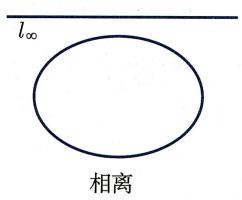
image
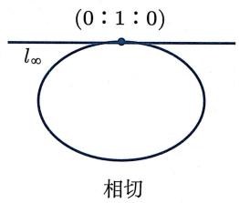
image
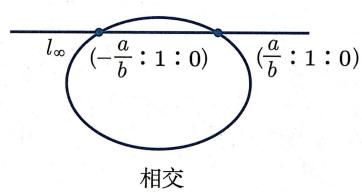
image
图5.6 位置关系
换而言之, 在射影平面里, 平面上三种不同形状的二次曲线得到了统一. 在射影的意义下它们都是同一种二次曲线, 只是它们相对于无穷远直线位置不同, 所以我们在 “有限” 的欧氏平面上才看见了不同形状. 下一节中会引入射影变换并对 上二次曲线进行射影分类, 从而可以严格说明 “三类非退化二次曲线在射影几何中相同” 的含义.
注5.1.9 当然也可以考察高次的射影曲线，例如费马曲线
如果将实数换成复数, 那么类比于射影平面的定义, 可以得到复射影平面. 这时, 上述二次曲线和直线的相交关系进一步得到简化. 这种简化如同高斯所证明的 “任何一元 n 次方程恰有 n 个复数根 (计算重数)” 那样, 可以证明二次曲线和直线总是相交于两个点 (计算重数). 事实上, 这是代数几何入门课程的一个基本定理, 即下述贝祖 (Bézout) 定理的特殊情形:
贝祖定理：复射影平面中，一条 次复射影曲线跟一条 次复
射影曲线 (在计重数的意义下) 一定相交于 个 (复) 点.
显然这个定理也是“任意两条射影直线必相交于一点”的高次推广.
§5.2 射影变换
在第三章我们主要从几何中抽出代数信息, 下面我们反其道而行, 从代数到几何.
延拓至 的仿射变换
从第四章我们知道在 中存在各种各样的几何, 而这些几何都是由相应的变换群决定的. 常见的变换群有
而它们都可以被视作 的子群, 比如最大的 同构于
之所以在 中寻找跟 同构的群, 是因为这样一来, 中的任意元素 都给出了 上的一个线性变换:
这个群事实上来自图 5.4, 即将 视为 中的平面 z = 1. 由于 , 不难验证
- .
- .
因此 是 到自身的映射，且将过原点的直线映为过原点的直线.
由此, 可得
命题5.2.1(平面仿射变换延拓至 ) 对于仿射变换群的任意元素 \left( \begin{array}{cc}A & \v命题
命题5.2.1(平面仿射变换延拓至 ) 对于仿射变换群的任意元素
- 诱导了一个 上的可逆映射
且它满足
- 将 映到 , 且当限制在 时, 它恰好是 (第四章所定义的) 上的仿射变换 .
证明 (1) 首先由 证明
证明 (1) 首先由 可知
从而 是良定的.
对任意 ，直接计算可知
这也意味着 是可逆的，因为 是恒等映射，
从而由
以及
可知 可逆, 且其逆为 .
- 矩阵计算可得
其中
于是
- 对于 , 由 知 , 故 , 即
- 对于 ，有 。故
于是由 可逆知 .
此外，由于 恰好是第四章所给出的 上的仿射变换 ，所以在 上 ，即 是仿射变换 的延拓. □
均表示一个可逆线性映射
类似于命题 5.2.1, 可以证明 诱导了 上的一个变换:
命题5.2.2 上的变换） 对任意 ， 诱导了 命题
命题5.2.2 上的变换） 对任意 ， 诱导了 上的一个可逆映射
且该映射满足
证明 证明方法跟命题5.2.1非常类似：证明
证明 证明方法跟命题5.2.1非常类似：
- 是良定的, 因为 , 且 .
- 对 ，有
- 由于 是 上的恒等映射, 并且
故 是在 上可逆的, 且其逆为 .
构造 的过程可图示如下：
我们定义
定义 5.2.3(射影变换) 对任意的 ，称它诱导的映射 \bar{\Phi}_{A}: R P^{2} 概念定义
定义 5.2.3(射影变换) 对任意的 ，称它诱导的映射 为射影变换.
于是 上的每个可逆线性变换都诱导了 的一个射影变换, 而 上的每个仿射变换则诱导了一个特殊的射影变换, 该射影变换把无穷远直线映射为无穷远直线. 另一方面, 不难找到例子说明一般的射影变换 并不一定把无穷远点映为无穷远点.
因为 上的每个可逆线性变换把过原点的平面映为过原点的平面, 我们立刻可得下述基本性质 (证明细节留作练习):
引理 5.2.4 (射影变换把直线映为直线) 中的每条射影直线在射影变换下的像依然是射影直线.命题/引理
引理 5.2.4 (射影变换把直线映为直线) 中的每条射影直线在射影变换下的像依然是射影直线.
射影变换群
记 为 上全体射影变换的集合.
命题 5.2.5 (射影变换群)命题
命题 5.2.5 (射影变换群)
- 是一个变换群.
- 仿射变换群 同构于 的子群
证明 (1) 由 以及 \bar{\Phi}_I = 证明
证明 (1) 由 以及 可知 , 从而 (在“映射复合”运算下) 是一个变换群.
- 易证 是 的子群. 考虑映射
注意对于 ，由 可知 . 下面证明 是群同构：
① 是一个群同态, 这是因为
② 是单射：如果 即 则对于任意 ，计算可得 ，从而对任意 均有
这说明 并且 ，从而 是群 的单位元.
③ 是满射：假设 且 . 记 , 则由 以及
可知
- 对任意 均有 , 从而 ;
- 由 可知 且 .
于是
我们称 为 的射影变换群.
注5.2.6 一般地, 设 为一集合, 对于 上任意一个变换群 以及 的一个子集族 , 其中 , 不难验证
构成 的一个子群. 这个观察在克莱因的埃尔朗根纲领中起到重要作用.
一般位置定理
首先给出一个定义:
定义 5.2.7 (一般位置)概念定义
定义 5.2.7 (一般位置)
- 若 中的点 中任意三点均不共线，则称它们是处于一般位置的点.
- 若 中的直线 中任意三线均不共点，则称它们是处于一般位置的直线.
由上述定义以及命题 5.1.4、命题 5.1.5 可知, 上的射影变换把 中处于一般位置的一组点映为处于一般位置的一组点, 把 中处于一般位置的一组直线映为处于一般位置的一组直线.
在习题 4 第 5(b) 题中我们已经看到, 平面仿射变换由它在任意一个非退化三角形 (即平面中处于一般位置的三个点) 的值确定. 下述定理表明, 的射影变换由它在处于一般位置的四个点处的值确定:
定理5.2.8（一般位置定理） 设 是 中处于一核心定理
定理5.2.8（一般位置定理） 设 是 中处于一般位置的四个点，
则存在唯一的射影变换 ，使得
证明 先证明存在性. 记 , 并令证明
证明 先证明存在性. 记 , 并令
因为点 在 中不共线, 所以矩阵 可逆. 令
断言：
【断言的证明：用反证法. 若 ，则
这跟 在 中不共线矛盾. 故 . 同理可知 . 最后, 令
则 A 是可逆矩阵, 且它满足
于是 就是所需的射影变换.
下面证明唯一性. 设 是另一个射影变换, 且满足所需的性质. 则
是一个射影变换, 且保持 , , 以及 四个点不变. 令
则存在 使得
把左边用矩阵乘法计算一下, 就有 , 且 . 于是 是恒等映射, 从而 . 故满足条件的射影变换是唯一的.
类似地, 可以证明 (习题)
定理5.2.9（ 的一般位置定理）设 是 中相异的三核心定理
定理5.2.9（ 的一般位置定理）设 是 中相异的三个点，则存在唯一的射影变换 ，使得
因为射影变换构成一个群, 所以
推论5.2.10(传递性) 对于 中任意两组处于一般位置的点 和 \{Q_1推论
推论5.2.10(传递性) 对于 中任意两组处于一般位置的点 和 , 存在唯一一个射影变换 使得 . 由此可得
命题5.2.11（一般位置定理：射影直线版）假设 是 中处于一般位置的命题
命题5.2.11（一般位置定理：射影直线版）假设 是 中处于一般位置的四条射影直线，则存在唯一的射影变换 使得
证明 令 P_{1} = l_{1}\cap l_{3},P_{2} = l_{1}\cap l_{4},P_{3} = l_{2}\cap l_{3},P_证明
证明 令 .则 处于一般位置.于是存在唯一的射影变换 使得
因为任意两点确定唯一一条直线, 所以 就是过 的直线, 即
同理可验证 满足其他条件.
满足条件的射影变换 的唯一性是定理5.2.8中唯一性的推论：若 是满足条件的另一个射影变换, 则 保持一般位置的四点不动, 从而只能是恒等变换. □射影平面中二次曲线在射影变换下的分类
根据定义, 中的二次曲线指的是齐次三元二次多项式的零点集, 即
其中 是某个非零的 对称矩阵. 现在考虑射影变换 . 简单计算可知
即 . 因为 也是一个非零的 对称矩阵, 所以 仍然是二次曲线. 由此可得
- 若记 为二次曲线\} 并在 上定义关系
则 是 上的等价关系 (因为射影变换构成一个几何变换群, 且将二次曲线映为二次曲线).
- 二次曲线在射影变换下的分类问题,本质上是如下代数问题:对于任意非零的 对称矩阵,寻找可逆矩阵 使得 “尽可能简单”.
根据附录中的命题 A.4.13, 存在正交矩阵 (自然可逆) , 使得
于是可以按照 的取值进行分类讨论：
情形 1 中恰有两个为 0.
通过交换 的行 (相当于把 乘一个对应于“坐标轮换”的正交矩阵), 不妨假设 . 若 , 则可用 代替 . 故不妨设 . 由于
所以在该情形, 总能找到可逆矩阵 A, 使得
故它在射影变换下等价于 , 即直线.
情形 2 中仅一个为 0. 同理不妨设 . 还要进一步讨论:
情形2.1 若 ，即 同号，不妨假设 都是正数.类似于情形1，可以找到可逆矩阵 ，使得
故它在射影变换下等价于 ，即单点集.
情形2.2 若 不妨设 同理能找到可逆矩阵 ，使得
故它在射影变换下等价于 或 x-y=0，即两条相交直线.
情形 3 全不等于 0. 同样分两种情形进一步讨论:
情形 3.1 同号, 不妨假设它们都是正数. 则存在可逆矩阵 A, 使得
故它在射影变换下等价于 ，即空集.
情形 3.2 不同号, 不妨假设 而 . 则存在可逆矩阵 A, 使得
故它在射影变换下等价于 ，即非退化二次曲线.
综上可得
命题5.2.12（二次曲线的射影分类） 中所有二次曲线在射影变换下可分为如下五类：命题
命题5.2.12（二次曲线的射影分类） 中所有二次曲线在射影变换下可分为如下五类：
证明 上面的分析已经证明了 上每条二次曲线都等价于定理中五种情形之一. 另一方面, 因为射影变换是保持直线的双证明
证明 上面的分析已经证明了 上每条二次曲线都等价于定理中五种情形之一. 另一方面, 因为射影变换是保持直线的双射, 所以这五类中, 不同类的元素一定不等价. □
特别地, 仿射空间的椭圆、抛物线、双曲线, 在射影空间就都等价于同一条二次曲线, 即非退化二次曲线 . 注意该射影曲线在标准三维欧氏空间里的“图形”是一个圆锥, 而椭圆、抛物线、双曲线都只是该圆锥跟不同平面相交所得的截线 (见图 1.6).
§5.3 射影变换的不变量
分式线性变换
在考察 上射影变换的几何性质之前, 先来研究 上射影变换的几何性质. 和 的情形相同, 可以定义 上射影变换为
其中 ，且
所以如果记 ，其中 那么
因此
为了理解 ，可以先将 限制在 上：
所以如果 并且 , 那么
于是限制到 后, 事实上把 映射为 . 形如这样的映射在研究射影变换时起到重要的作用, 所以给它一个专门的名称:
定义 5.3.1 (分式线性变换) 对于 A = \left( \begin{array}{cc} a & b \\ c & d \end{array} \r概念定义
定义 5.3.1 (分式线性变换) 对于 ，称映射
为 上的一个分式线性变换.
可以验证 (习题):
引理 5.3.2 (射影变换诱导分式线性变换) 如果 ，其中 A, A' \in GL(命题/引理
引理 5.3.2 (射影变换诱导分式线性变换) 如果 ，其中 ，那么 .
于是对于任意给定的射影变换 , 如果把它限制在 上, 就得到一个确定的分式线性变换.
反过来, 给定任意分式线性变换 , 其中 , 我们也可以把它延拓到“无穷远点”, 并得到一个射影变换. 延拓方法如下:
- 如果 , 那么 是在 上有定义的, 还需要定义它在“无穷远点” 的值. 因为 , 所以自然定义 . 在齐次坐标下即
- 如果 , 那么 是在 上有定义的, 因为 , , 所以自然定义 , . 在齐次坐标下即
不难验证 (留作习题)
引理 5.3.3 (分式线性变换决定射影变换) 对情形 (a) 与 (b) 都有命题/引理
引理 5.3.3 (分式线性变换决定射影变换) 对情形 (a) 与 (b) 都有
- 由分式线性变换 所诱导的变换 是射影变换.
- 如果 , 那么 .
交比
下面探索一个自然的问题：
在分式线性变换 下, 什么几何量会被保持?
我们从最简单的量开始找感觉. 对于任意的 , 可以计算
于是除了极其特殊的 (即满足 ) 之外, 一般而言 , 即两点之间的距离不被保持. 因为仿射变换保距离比, 所以接下来退而求其次, 考虑距离的比值. 使用上面的公式 (*) 可得
所以, 除了少量的 (即满足 ) 之外, 距离之比仍然不能被一般的分式线性变换保持. 虽然考虑距离之比并未奏效, 但稍微观察一下会发现, 上面使得距离之比不被保持的“坏项” 是与 无关的! 所以, 只需要向前走一步, 注意到
就可以把坏项消掉：
这是一个被 保持的量！
定义 5.3.4 (交比) 对任意不同的四个数 ，称概念定义
定义 5.3.4 (交比) 对任意不同的四个数 ，称
为它们的交比.
在上面的探索过程中, 我们已经证明了
命题 5.3.5 (分式线性变换保交比) 任意分式线性变换保持交比, 即对任意不同的四个数 , 均有命题
命题 5.3.5 (分式线性变换保交比) 任意分式线性变换保持交比, 即对任意不同的四个数 , 均有
注5.3.6 可以将交比的定义推广到有一个 为 的情形.例如，因为
所以可以自然定义
类似地, 可以定义
我们在后面将要证明交比是射影变换下的不变量。读者不妨思考一下这些“带有一个无穷远点的交比”在特定射影变换下的不变性跟“仿射变换保持平行线段长度比”之间的联系。
下面这个性质说明了任意“保持交比不变的映射”由它在三点处的值唯一确定：
引理 5.3.7 (保持交比的映射) 若映射 保命题/引理
引理 5.3.7 (保持交比的映射) 若映射 保持交比, 且
则 是恒等映射.
证明 对任意的 , 一方面由 保交比可知证明
证明 对任意的 , 一方面由 保交比可知
另一方面由 保 可知
因此对任意 均有 , 即 是恒等映射.
射影变换与交比
利用分解 , 可以将交比“移植”到 上. 具体而言, 因为
所以在齐次坐标下, 如果 , 则定义它们的交比为
下面的命题就是自然的 (且不难由定义验证):
命题5.3.8(射影变换保交比) 任意射影变换 保持交比，即对任意不命题
命题5.3.8(射影变换保交比) 任意射影变换 保持交比，即对任意不同的四点 ，均有
反过来, 由定理 5.2.9, 上的射影变换由它在三个点处的值唯一确定, 而由引理 5.3.7, 上保持交比不变的变换也由它在三个点处的值唯一确定, 于是自然就有
定理 5.3.9 (射影变换 保交比) 一个变换 (即双射) \Phi: RP^{1} \rightarrow R核心定理
定理 5.3.9 (射影变换 保交比) 一个变换 (即双射) 是射影变换当且仅当它保持交比.
证明 令 为一个保持 \mathbb{R}证明
证明 令 为一个保持 上交比的变换. 记
因为 是双射, 所以 是 中互异的点. 由定理5.2.9, 存在唯一的射影变换 使得
从而 是一个保交比的双射，且 ，故由引理5.3.7, 是恒等映射.于是 是一个射影变换. □
射影坐标
接下来考虑射影平面 中同一条射影直线 上的四个点. 为了定义它们之间的交比, 需要用 对 进行参数化, 该参数化方法跟我们用 对欧氏直线进行参数化非常类似:
定义 5.3.10(射影平面中直线的射影坐标) 设 是 中的任意直线, 若概念定义
定义 5.3.10(射影平面中直线的射影坐标) 设 是 中的任意直线, 若
是一个单射, 其中 都是变量 的一次齐次函数 (即形如 ), 且满足
则称 是 的一个射影坐标映射（或一个射影参数化）.
注5.3.11 事实上满足条件的 是一个从 到 的双射, 原因如下:
在 中选取相异的两点 ，那么对任意点 存在 使得
于是由齐次性, 在 的像中.
所以 ，也就是说， 上每一点都恰好被 中的某一点所参数化.
例 5.3.12 同一条射影直线的射影坐标非常多, 例如经典例题
例 5.3.12 同一条射影直线的射影坐标非常多, 例如
都是 的射影坐标.
对于一般的射影坐标, 记
写成矩阵乘法即
注意对任意不全为零的 都有 , 故 不平行于 . 故
换而言之, 选取一个射影坐标映射不过就是在平面 中选择两个满足 的向量 . 从几何上看, 这件事等价于如下事实: 平面 中的任意向量可由其中的任意两个不共线向量唯一表示.
例 5.3.13 根据平面方程的即约形式, 任何平面 都具有 (一个、两个或三个) 如下自然的射影参数化: 以 a \n经典例题
例 5.3.13 根据平面方程的即约形式, 任何平面 都具有 (一个、两个或三个) 如下自然的射影参数化: 以 为例, 此时该平面方程可写成
于是，
是射影直线 的一个射影坐标.
射影平面中共线四点的交比
下面用射影参数化 (以及在射影直线 上已经定义好的交比) 来定义射影平面中共线四点的交比. 为此需要研究同一条射影直线不同射影参数化之间的关系.
引理5.3.14(不同射影参数化的关系) 若 \phi_1, \phi_2: \mathbb{RP}^1 \to l \subset \mathbb{RP}^命题/引理
引理5.3.14(不同射影参数化的关系) 若 是射影直线 的两个射影参数化，则
是 的一个射影变换.
证明 不妨设 . 先考虑一种特殊情况, 即 的两个不同的射影参数化为 \证明
证明 不妨设 . 先考虑一种特殊情况, 即 的两个不同的射影参数化为 与 , 其中第一种参数化 为特定的参数化 , 而 是一个一般的射影参数化, 由
给出. 则存在 使得
成立, 因此同一个点的两种参数化之间的关系为
由于行列式 ，故 是 的一个射影变换.
对于两个一般的射影参数化 ，由
可以把问题转化为上述特殊情形, 由此可知结论成立.
故由 上交比在射影变换下的不变性可知
推论5.3.15(交比不依赖于射影坐标的选取) 对于射影直线 上相异的四点 P_{1},P_{2},P_{3推论
推论5.3.15(交比不依赖于射影坐标的选取) 对于射影直线 上相异的四点 ，以及 的任意射影坐标
的值不依赖于 的选取.
于是可定义
定义 5.3.16 ( 中任意射影直线上的交比) 设 是 中共线且概念定义
定义 5.3.16 ( 中任意射影直线上的交比) 设 是 中共线且相异的四点. 称上述推论中的 为 的交比.
上射影变换的刻画
下面证明本节的主定理, 它说明共线性和交比是射影几何的基本不变量:
- 保持直线 (即 把射影直线映为射影直线);
- 保持交比：若 是共线的四点，则
证明证明
证明
设 是一个射影变换, 则显然 将直线映为直线.
进一步, 设 为一条直线并且记 . 先选定一个 的射影坐标 , 则
是 的一个射影坐标. 于是对任意的 , 有
所以 保持交比.
假设 是一个保持直线与交比的变换 (双射). 记
由命题 5.2.11, 存在唯一的射影变换 使得
考虑映射 .那么 是一个保持直线与交比的双射，且它将四条直线
分别映为自身. 记 , 则它跟另外三条直线交于三个不同的点, 即 , , , 所以由 的构造可知 保持这三个点不动. 由引理5.3.7, 在 上是恒等映射. 同理它在另外三条直线上是恒等映射.
最后, 对于任意不在这几条线上的点 , 我们任取过 的直线 , 使得它跟 交于不同的三点 . 则 是一条包含了 的直线, 从而 , 且 保 上的交比以及三个点. 再次运用引理5.3.7可知 在 上是恒等映射. 所以 在整个 上是恒等映射, 从而 是射影变换.
§5.4 射影几何中的一些经典定理及其对偶
本节介绍平面几何中的一些优美定理. 这些定理并不涉及长度、角度、平行等欧氏几何或者仿射几何中的量, 而只涉及交点、连线等射影几何量. 所以, 虽然它们一开始是在欧氏平面几何的框架里被发现和证明的, 但它们事实上从属于更广阔的射影几何. 这些定理的证明方法也都有很多种, 各有其妙. 我们将采用射影几何结合解析几何的方法证明它们, 并初步讨论射影几何的公理基础及其应用.
帕普斯定理
先从射影几何中的第一个定理出发, 它是由古希腊亚历山大晚期数学家 (古希腊最后的几何学家之一) 帕普斯发现的.
定理5.4.1（帕普斯定理） 设三点 共线，三点 也共线，则三个交点核心定理
定理5.4.1（帕普斯定理） 设三点 共线，三点 也共线，则三个交点
也是共线的（图5.7）.（即：若六边形 的六个顶点交替出现在两条直线上，则三组对边的交点共线.）
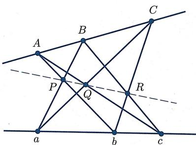
image
图5.7 帕普斯定理
证明 首先假设 四点都不是两条线的交点，从而 四点处于一般位置。由定理5.2.8，可以选择射影坐标使得证明
证明 首先假设 四点都不是两条线的交点，从而 四点处于一般位置。由定理5.2.8，可以选择射影坐标使得
于是可以得到
- 直线 的方程为 , 从而存在 使得 .
- 直线 的方程为 , 从而存在 使得 .
这又意味着
- 直线 和 的方程分别为 和 , 从而 .
- 直线 和 的方程分别为 和 , 从而 .
- 直线 和 的方程分别为 和 , 从而 .
经计算可知
所以由习题 5 第 3 题可知 P, Q, R 是共线的.
最后, 若 以及 以及 都不处于一般位置, 则必有“不对应”的两点, 例如 是定理中所给定两条直线的交点. 此时不难发现 , 而虽然 不是良定的, 但无论取 为哪条过 的直线, 定理依然成立.
帕斯卡定理
接下来证明帕普斯定理的一个推广, 它是法国数学家帕斯卡在 16 岁时发现的:
定理5.4.2（帕斯卡定理） 假设六边形 内接于二次曲线 ，则该六边形“三组对边的交点”核心定理
定理5.4.2（帕斯卡定理） 假设六边形 内接于二次曲线 ，则该六边形“三组对边的交点”
是共线的 (图 5.8).
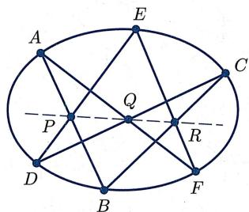
image
图5.8 帕斯卡定理
证明 若 是退化二次曲线, 则该定理就是帕普斯定理. 下面假设 是非退化二次曲线. 由定理5.2.8, 证明
证明 若 是退化二次曲线, 则该定理就是帕普斯定理. 下面假设 是非退化二次曲线. 由定理5.2.8, 可以选择射影坐标使得
假设该二次曲线方程是 将 的坐标代入方程中，可知 从而方程化简为
于是对于 上坐标非零的点, 有 . 记 . 因为 是非退化二次曲线, 都不在 或 或 上, 即它们的坐标均非零. 于是,
这说明
从而向量 共面，故
另一方面，
- 直线 方程为 , 直线 方程为 , 从而点 .
- 直线 方程为 , 直线 方程为 , 从而点 .
- 直线 方程为 , 直线 方程为 , 从而点 由此可计算出
于是 是共线的.
德萨格定理
下一个要证明的定理是德萨格定理, 它是由射影几何的创始人之一, 法国数学家、工程师德萨格发现的.
定理 5.4.3（德萨格定理）设 为两个三角形. 如果 是共核心定理
定理 5.4.3（德萨格定理）设 为两个三角形. 如果 是共点的, 那么交点
是共线的 (图 5.9).
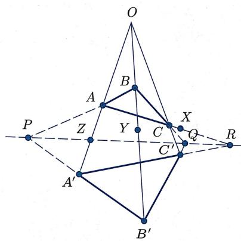
image
图5.9 德萨格定理
我们将给出两个证明, 第一个证明用到了标准二维平面可嵌入三维空间这个性质 (该证明还用到了欧氏几何中平行性这个 “非射影” 的概念, 要改写成纯射影几何的证明, 还需要引入三维射影空间以及其中的透视投影的概念, 此处从简), 而第二个证明则只用到帕普斯定理, 并适用于所有使得帕普斯定理成立的 (抽象) 射影平面 (在抽象射影几何中, 存在德萨格定理不成立的 “抽象射影平面”).
证明证明
证明
[第一个证明] 先证明三维版本：若 处于不同的平面 内. 那么 都在 之中，因此是共线的.
若 处在同一个平面内，取不在此平面内的一个点 。分别过 作 的平行线，交 于 。于是 与 是不在同一平面内的三角形，且满足定理的条件，从而可以应用刚刚证明的结论。最后将所有点沿着 方向投影到原先的平面上，就证明了本定理。
[第二个证明] 连续三次使用帕普斯定理：
- 令 (于是 在 上), (于是 在 上), . 将帕普斯定理应用到 与 上, 可得
是共线的.
- 令 , 将帕普斯定理应用到 与 上, 可得
是共线的.
- 将帕普斯定理应用到 与 上, 可得 (此处用到了: 由 共线以及 共线知 在 上, 由 共线以及 共线知 在 上)
是共线的.
结合 (1), (3) 可知 是共线的, 从而定理得证.
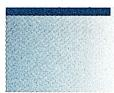
image
注5.4.4 这三个定理都可被统一到代数几何中的凯莱-巴拉赫(Cayley-Bacharach)定理，作为其特例.
射影几何公理
不同于欧氏几何的希尔伯特公理, 在射影平面里有两个本源概念, 点和直线, 但只有一个本源关系, 即关联. 如果点 和直线 关联, 则称点 在直线 上, 或者直线 过点 . 同理可定义两条直线相交、多条直线共点、多个点共线等概念. 对于射影平面, 当然不再考虑角这样的概念, 但有一个特殊的构型却非常有用:
定义 5.4.5 (完全四点形) 若 P, Q, R, S 四个点中, 任意三点不共线, 则称由 “这四个点及它们两两连接的六条直线” 所组成的图形为一个完全四概念定义
定义 5.4.5 (完全四点形) 若 P, Q, R, S 四个点中, 任意三点不共线, 则称由 “这四个点及它们两两连接的六条直线” 所组成的图形为一个完全四点形, 称这四个点为该完全四点形的顶点, 称这六条直线为它的边, 并称没有公共顶点的三组边为三组对边, 对边的交点称为对边点.
例如, 图 5.10 是一个完全四点形, 其中 与 , 与 , 与 为三组对边, 而 三点为三个对边点.
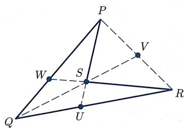
image
图5.10 完全四点形
从不同的着眼点出发, 人们提出过许多不同的关于射影平面的公理. 为简单起见, 我们考虑下面这组由五条公理组成的射影几何公理体系 (取自 [17]):
公理 (射影平面公理)公理
公理 (射影平面公理)
公理 1 任意不同的两点跟唯一一条直线关联.公理
公理 1 任意不同的两点跟唯一一条直线关联.
公理 2 任意不同的两条直线跟至少一个点关联.公理
公理 2 任意不同的两条直线跟至少一个点关联.
公理3存在四个点，其中任意三个不共线（即存在完全四点形）.公理
公理3存在四个点，其中任意三个不共线（即存在完全四点形）.
公理 4 (法诺公理) 完全四点形的三个对边点不共线.公理
公理 4 (法诺公理) 完全四点形的三个对边点不共线.
公理 5 (帕普斯公理) 帕普斯定理成立, 即: 若六边形的六个顶点交替出现在两条直线上, 则三组对边的交点共线.公理
公理 5 (帕普斯公理) 帕普斯定理成立, 即: 若六边形的六个顶点交替出现在两条直线上, 则三组对边的交点共线.
当然, 这五条公理中, 前三条是最基本的, 后两条是为了排除掉一些古怪的 “射影平面”, 从而使所得射影平面有更好的性质. 注意跟希尔伯特公理体系类似, 由公理 1 与公理 2, 立刻可以证明
命题 5.4.6 (两条线交于一点) 任意不同的两条直线恰好跟唯一一个点关联.命题
命题 5.4.6 (两条线交于一点) 任意不同的两条直线恰好跟唯一一个点关联.
证明 由公理2, 两条线至少跟一个点关联. 另一方面, 若两条线跟两个点都关联, 则由公理1, 它们是同一条直线. 故命题成立. □证明
证明 由公理2, 两条线至少跟一个点关联. 另一方面, 若两条线跟两个点都关联, 则由公理1, 它们是同一条直线. 故命题成立. □
对偶原理的证明
射影平面最优美的性质之一是对偶原理. 前面已经看到了命题 5.1.4 与命题 5.1.5 之间的对偶性, 以及定理 5.2.8 与命题 5.2.11 之间的对偶性. 粗略来说, 对偶原理意味着
在射影平面中,“点”和“直线”是对偶的:对于射影平面的定理,如果把“点”
换成“直线”，把“直线”换成“点”；把“包含”换成“属于”，把“属于”换成
“包含”; 把 “连接” 换成 “相交”, 把 “相交” 换成 “连接”; 把 “共点” 换成 “共
线”，把“共线”换成“共点”……则所得的结论依然是正确的.
那么, 为什么对偶原理成立呢? 下面这个定理是 “对偶原理” 的一种数学陈述, 这里体现出了公理化方法的威力.
定理 5.4.7（射影平面的对偶原理） 若一个定理可由上述射影平面公理（公理 1 至公理 5）推出，则它的对偶定理也成立.核心定理
定理 5.4.7（射影平面的对偶原理） 若一个定理可由上述射影平面公理（公理 1 至公理 5）推出，则它的对偶定理也成立.
证明 下面我们将证明：“公理 1—公理 5”可以推出它们自身的对偶。因此，若一个定理可由这五个公理推出，则只要把推导过程中所用到的公理改为它的对偶，就可以证明该证明
证明 下面我们将证明：“公理 1—公理 5”可以推出它们自身的对偶。因此，若一个定理可由这五个公理推出，则只要把推导过程中所用到的公理改为它的对偶，就可以证明该定理的对偶定理。
下面来具体分析论证这五个公理的对偶：
- 公理1的对偶是命题5.4.6, 它是公理1和公理2的推论.
- 公理2的对偶是“任意不同的两点跟至少一条线关联”，它是公理1的推论.
命题 5.4.8 (存在完全四边形) 存在四条直线, 其中任三条不共点.命题
命题 5.4.8 (存在完全四边形) 存在四条直线, 其中任三条不共点.
证明 由公理3, 存在一个完全四点形 , 如图5.10所示. 考虑四条直线证明
证明 由公理3, 存在一个完全四点形 , 如图5.10所示. 考虑四条直线
则这四条直线两两之间的交点
是互不相同的.
当然, 这样得到的构型是完全四点形的对偶, 于是可以定义
定义 5.4.9(完全四边形) 若四条直线中, 任意三线不共点, 则称由 “这四条直线以及它们两两相交所成的六个点” 所组成的图形为一个完全四边形, 称这四条直概念定义
定义 5.4.9(完全四边形) 若四条直线中, 任意三线不共点, 则称由 “这四条直线以及它们两两相交所成的六个点” 所组成的图形为一个完全四边形, 称这四条直线为该完全四边形的边, 称这六个交点为它的顶点, 并称没有公共边的三组点为三组对顶点, 对顶点的连线称为对角线.
命题 5.4.10 (对偶法诺公理) 完全四边形的三条对角线不共点.命题
命题 5.4.10 (对偶法诺公理) 完全四边形的三条对角线不共点.
命题 5.4.11 (帕普斯定理的对偶) 设三条直线 共点, 三条直线 l_{1}^{\prime}, l_{2}命题
命题 5.4.11 (帕普斯定理的对偶) 设三条直线 共点, 三条直线 也共点. 记 则三条直线 也是共点的 (图 5.11).
证明 令 A_{1} = l_{1}\cap l_{2}\cap l_{3}, A_{2} = l_{1}^{\prime}\cap l_{2}^{\prim证明
证明 令 ，则欲证之命题等价转化为
已知六边形 的六个顶点交替出现在两条直线上 (即 在 上, 而 在 上), 证明对边的交点 共线.
而这恰好就是帕普斯定理.（故帕普斯定理的对偶等价于帕普斯定理本身.）
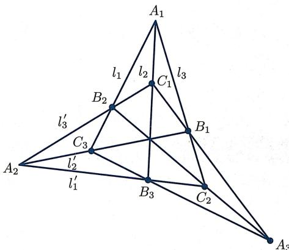
image
图5.11 帕普斯定理的对偶
这就完成了“上述射影平面公理1—公理5蕴涵它们自身的对偶命题”的证明.
德萨格定理以及帕斯卡定理的对偶定理
根据对偶原理以及德萨格定理, 可知德萨格定理的对偶定理是成立的. 有趣的是, 德萨格定理的对偶定理恰好是德萨格定理的逆定理:
定理 5.4.12（德萨格定理的逆定理（德萨格定理的对偶）） 如果 是两个三角形，且核心定理
定理 5.4.12（德萨格定理的逆定理（德萨格定理的对偶）） 如果 是两个三角形，且
是共线的, 则直线 是共点的 (图 5.12).
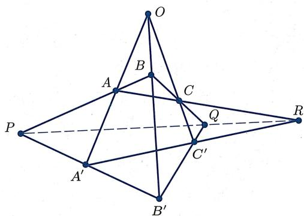
image
图5.12 德萨格定理的对偶
最后探讨帕斯卡定理的对偶. 它比前几个定理的对偶要复杂, 因为涉及非退化二次曲线. 二次曲线是由很多点组成的集合, 它的对偶是很多线组成的集合. 事实上, 如果深入研究二次曲线的射影理论, 可以发现 “作为点集的二次曲线” 的对偶是 “由另一条二次曲线的切线组成的直线集”. 于是, “点-线” 对偶可以被扩展至二次曲线:
“点在二次曲线上”的对偶是“直线是二次曲线的切线”，“二次曲线的内接多边形”的对偶是“二次曲线的外切多边形”，等等.
由此, 立刻可以得到
定理 5.4.13（布里昂雄定理（帕斯卡定理的对偶）） 如果一个六边形 ABCDEF 外切于一条二次曲线，那么它的三条主对角线（即连接相对顶点的对角线）AD, 核心定理
定理 5.4.13（布里昂雄定理（帕斯卡定理的对偶）） 如果一个六边形 ABCDEF 外切于一条二次曲线，那么它的三条主对角线（即连接相对顶点的对角线）AD, BE, CF 是共点的（图 5.13）.
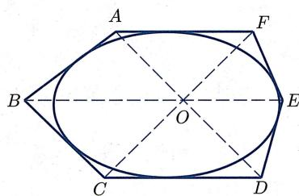
image
图5.13 帕斯卡定理的对偶
习题 习题 5
- 的圆模型
- 证明下述映射是良定的双射:
- 设 是标准的嵌入 (即将 映为 ). 验证: .
- 的球面商模型
考虑射影平面 的球面商模型, 即
在这个模型下, 射影平面的每个点恰好对应于球面的一组对径点.
- 射影平面里的每条直线对应于球面的什么几何对象？特别地，无穷远直线对应于球面的哪个子集？
- 把 “射影平面中任意两点对应一条直线, 任意两条线交于一点” 翻译成对应的熟知的球面几何事实.
- 三点共线与三线共点的判别准则
- 证明： 中三点 ( ) 共线当且仅当行列式
- 证明： 中三点 共线当且仅当 .
- 对于 中任意三线, 写出它们共点的判别准则 (与 (a) 类似) 并证明.
- 中全体平面集合的参数化
射影平面 是 中所有过原点的直线的一个参数化. 请用类似的方法, 给出下列几何对象的参数化 (即在合适的空间上定义合适的等价关系, 使得商空间的元素与所需参数化的对象有一一对应):
- 中所有过原点的平面.
- 中的所有平面.
- 直线在 中的交点 vs 在 中的交点
设 是 中两条相异的直线，而 是它们的射影化.证明
- 若 , 则 .
- 若 , 则 .
- 将 中直线 射影化, 并求后者与无穷远直线 交点的射影坐标.
- 解释 “两条平行线相交于无穷远直线 (地平线)”.
- 射影平面里点与直线的对偶性
对于射影平面 中的任意点 , 令
反之对于射影平面 中的任意直线 , 令
- 验证上述“点与直线间的对应”是良定的.
- 证明：对于 中的点 与直线 , 总有
- 说明命题 5.1.4与命题 5.1.5是互相等价的.
7. 射影变换的例子
考察 到 的一族映射
- 求 的取值范围使得 为射影变换.
- 设 不是一个射影变换, 试证 的像为一直线.
- 中射影变换与矩阵的关系
- 任取 中的方阵 , 证明它们诱导的射影变换相等 (即 ) 当且仅当存在实数 , 使得 成立.
- 证明： 是 正规子群，且射影变换群同构于 的商群，即 .
9. 射影变换群的另一个子群
- 证明注 5.2.6 所提到的结论.
- 考虑 的子集族 , 其中 为无穷远直线 (即 ), 为 轴对应的射影直线 (即 ), 为 轴对应的射影直线 (即 ). 求使得它们分别不变的射影变换全体所构成的子群.
- 保持无穷远点逐点不动的子群
- 考虑保持 中每个点都逐点不变的射影变换,
证明 是 的射影变换群的子群.证明
证明 是 的射影变换群的子群.
- 令 为 上由如下形式的仿射变换
所构成的子集. 证明 是 的仿射变换群的子群.
- 证明存在自然的群同构 .
- 透视投影
设 为 中的两条直线, 且 (图5.14). 称映射
为从 到 的透视投影, 并称点 O 为该透视投影的透视中心.
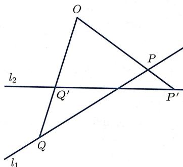
image
图5.14 透视投影
- 设 分别为 中直线 和 的射影化. 对于不在这两条线上的点 , 计算以 为透视中心的从 到 的透视投影映射.
- 证明透视投影保交比, 即: 若 是 上相异的四点, 而 是它们在某透视投影下的像, 则 .
- 的射影变换保交比
证明命题 5.3.8.
- 中射影变换与分式线性变换的关系
- 证明射影变换诱导分式线性变换, 即引理 5.3.2.
- 证明分式线性变换决定射影变换, 即引理 5.3.3.
- 高次曲线的射影化
先给出几个定义：
- 对于任意非零的二元 次多项式 , 称
为 中的 次曲线.
- 对于任意非零的三元 次齐次多项式 , 称
为 中的 次射影曲线.
- 对于任意非零的二元 次多项式 , 令 , 并称 为 的射影化. 证明:
- 对于任意非零的三元 次齐次多项式 , 集合 是良定的.
- 对于任意非零的二元 次多项式 是一个非零的三元 次齐次多项式.
- 考虑 .
- 求 在 中的射影化 .
- 求 .
- 试证: 与 中任意射影直线最多相交于三个点.
15. 射影变换的基本定理
设 是三个相异点. 证明: 存在唯一射影变换 使得
16. 一般位置的点
- 试求 上的一射影变换, 使点 顺次映射到点 .
- 设 是 中不共线的四个点. 证明: 处于一般位置当且仅当存在射影变换 使得
17. 一般位置定理：其他情形
- 证明： 上的射影变换由它在“处于一般位置的三个点以及不过这三个点的一条直线”上的值唯一确定.
- 写出上述结论的对偶, 并证明之.
- 二次曲线的射影分类
判断 中由下述方程所给出二次曲线的射影类型:
- .
-
- 五点决定一条二次曲线
- 在 上任给处于一般位置的五个点 (即其中任意三点不共线), 证明存在唯一非退化二次曲线通过它们.
- 仅用直尺作出该二次曲线上的另一个点. (提示: 用帕普斯定理.)
- 若这五个点中有三点共线但无四点共线, 证明存在唯一退化的二次射影曲线通过它们.
20. 射影直线的射影坐标
- 考虑 上的四个点 .
- 求证这四个点共线, 并求该直线 的方程.
- 给出直线 的一个射影参数化.
- 计算交比 .
- 考虑 上的三个点 .
- 证明 三点共线, 并求该直线 的方程.
- 在此直线上求出点 , 使得 .
21. 透视投影的表达式
考虑 中的两条直线
- 证明点 不在 和 上.
- 求直线 的自然射影参数化 .
- 求透视投影 在上述射影参数化下的坐标表达式.
22. 复交比
类似于实交比, 对于复数 , 可以定义复交比
- 证明：若 ，则要么 四点是共圆的，要么其中三点共线且第四个为 .
- 证明复交比在默比乌斯变换 (其中 且 ) 下是不变的.
23. 共点四线的线交比
对于共点 的四条线 , 任取不过点 的直线 , 并记 . 定义 的线交比为 .
- 证明上述线交比是良定的, 即不依赖于 的选取.
- 对于共圆的四点 , 任取该圆上另一点 , 证明线交比 不依赖于 的选取.
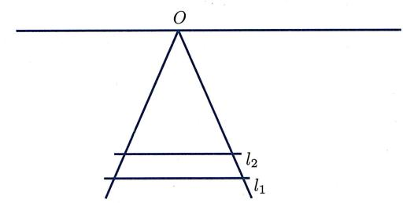
image
24. 射影几何的应用
下图是火车轨道, 其中 和 表示两根相邻的枕木.
- 仅用直尺, 作出下一根枕木 的位置.
- 设在上图中, 第 根枕木 跟 的欧氏距离为 . 用 和 表达 .
25. 射影对合
先给出两个概念：
- 若射影变换 满足 , 则称 是一个射影对合.
- 若点 满足 , 则称 是 的一个不动点.
- 考虑 的情形.
- 构造一个没有不动点的射影对合 .
- 证明：若一个“不是恒等映射的射影对合 ”有不动点，则它恰有两个相异的不动点.
- 考虑 的情形.
- 构造一个非恒等映射的射影对合 , 使得 以及无穷远直线上的所有点 都是 的不动点. 且 .
- 证明：对于任意射影对合 ，一定存在直线 以及不在 上的点 ，使得 以及 上的每个点都是 的不动点.
- 再探梅涅劳斯定理和塞瓦定理
在习题 2 第 12 题 (c)(d) 两问中, 我们给出了梅涅劳斯定理和塞瓦定理.
- 试将它们解释成射影几何定理 (需要将涉及的量转化成交比的乘积).
- 解释这两个定理之间的对偶关系.
- 试用射影几何方法给出证明.
- 德萨格定理另证
用下述方法直接证明德萨格定理：取射影坐标系使得
写出 的射影坐标 (各包含一个参数), 计算交点坐标并证明它们共线.
- 帕斯卡定理的逆定理
证明帕斯卡定理的逆定理：若六边形 “三组对边交点”
是共线的, 则该六边形内接于一条二次曲线.
- 法诺公理与对偶法诺公理
- 证明标准的 满足法诺公理.
- 证明命题 5.4.10, 即射影平面公理 1—公理 5 蕴涵了对偶法诺公理.
思考题 思考题 5
I. 有限射影几何
先给出几个定义：
- 称满足射影平面公理中的公理 1、公理 2、公理 3 的系统 (该系统包含点、线以及点与线之间的关联关系) 叫做 (广义) 射影平面.
- 若有限射影平面 中有直线恰好跟 个点关联, 则称它为 阶射影平面. 回答下述问题:
- 设一个系统 (图5.15) 含有七个点 以及七条线 , 其中点与线的关联关系为
证明 是一个2阶射影平面（被称为法诺平面）.证明
证明 是一个2阶射影平面（被称为法诺平面）.
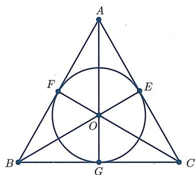
image
图5.15 2阶射影平面
- 上述法诺平面是否满足法诺公理?
- 证明：若有限射影平面 的某条线上恰有 个点，则它的每条线上都恰有 个点。（故“阶”的概念是良定的。）
- 设 是 阶射影平面, 是一个点. 求证: 恰有 条线通过点 .
- 证明： 阶射影平面 恰有 个点以及 条线.
- 证明：任意2阶射影平面一定同构于(给出同构的定义)上面所给出的法诺平面.
本题中可以使用如下结果而不必证明：
若 保加法、乘法 (即满足 和 ), 则 是恒等映射.
设 是射影直线 上的四个点. 若交比 , 则称 为调和四点组.
- 证明下述几个四点组都是调和四点组：
- 证明：若变换 把调和四点组映为调和四点组，则它是射影变换.
- 设 是 中的完全四点形 (图5.16), 并记它的对边点为
令 . 证明 是调和四点组.
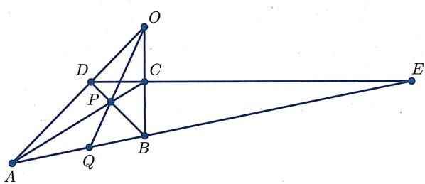
image
图5.16 完全四点形ABCD
- 设 是一个保直线 (即把共线点映射为共线点) 的变换.
- 证明 把调和四点组映为调和四点组.
- 证明 是射影变换.